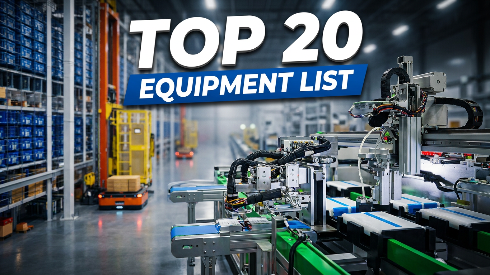

Top 20 Equipment Required for a Complete Lithium Battery Production Line | EV Battery Factory Equipment Guide
Understanding the Essential Equipment Behind a Modern Battery Manufacturing Plant Building a lithium battery factory requires the integration of multiple specialized manufacturing systems. A complete battery production line is not based on one machine. It is a complete manufacturing ecosystem connecting: Material preparation Electrode production Cell assembly Packaging Electrochemical processing Testing Automation logistics Intelligent warehousing For companies planning a new EV battery factory or expanding existing production capacity, selecting the right equipment configuration is one of the most important investment decisions. This article explains the 20 key equipment systems required for a complete lithium battery production line, including their functions, applications, and importance in modern smart battery manufacturing. The solution is suitable for: EV battery manufacturers ESS battery producers Mining truck battery suppliers Industrial battery manufacturers New energy factory investors

Summary
Understanding the Essential Equipment Behind a Modern Battery Manufacturing Plant
Building a lithium battery factory requires the integration of multiple specialized manufacturing systems.
A complete battery production line is not based on one machine.
It is a complete manufacturing ecosystem connecting:
Material preparation
Electrode production
Cell assembly
Packaging
Electrochemical processing
Testing
Automation logistics
Intelligent warehousing
For companies planning a new EV battery factory or expanding existing production capacity, selecting the right equipment configuration is one of the most important investment decisions.
This article explains the 20 key equipment systems required for a complete lithium battery production line, including their functions, applications, and importance in modern smart battery manufacturing.
The solution is suitable for:
EV battery manufacturers
ESS battery producers
Mining truck battery suppliers
Industrial battery manufacturers
New energy factory investors
Technology
- Complete Lithium Battery Production Equipment Technology
- A modern lithium battery factory consists of several major production sections.
- Each section requires specialized equipment working together as an integrated system.
- 1. Electrode Manufacturing Equipment
- The electrode manufacturing stage determines the foundation of battery performance.
- 1.1. Slurry Mixing System
- Function:
- The slurry mixing system combines active materials
- conductive agents
- binders
- and solvents into a uniform electrode mixture.
- Key requirements:
- High mixing consistency
- Precise material control
- Stable production quality
- Business value:
- Improves electrode quality and reduces production variation.
- 1.2. Battery Coating Machine
- Function:
- The coating machine applies electrode slurry onto metal foil.
- Key performance factors:
- Coating accuracy
- Uniform thickness
- High-speed production
- Business value:
- Directly influences battery performance and production efficiency.
- 1.3. Calendaring Machine
- Function:
- The calendaring system compresses electrode materials to achieve proper density.
- Benefits:
- Improved energy performance
- Better electrode structure
- Higher consistency
- 1.4. Tab Cutting Machine
- Function:
- Cuts electrode tabs with high precision before cell assembly.
- Benefits:
- Accurate positioning
- Improved assembly efficiency
- 2. Cell Assembly Equipment
- The assembly process creates the internal battery structure.
- 2.1 Battery Winding Machine
- Function:
- The winding machine assembles electrode materials into battery cells.
- Key advantages:
- High-speed production
- Accurate alignment
- Stable cell structure
- 2.2 Hot Pressing Machine
- Function:
- Applies controlled pressure and temperature to improve cell formation quality.
- Benefits:
- Better internal contact
- Improved consistency
- 2.3 Ultrasonic Welding Machine
- Function:
- Creates reliable electrical connections through ultrasonic welding technology.
- Applications:
- Battery tabs
- Internal connectors
- Benefits:
- Strong connection
- Low resistance
- High reliability
- 2.4 Connector Welding Machine
- Function:
- Provides automated welding for battery connection components.
- Benefits:
- Improved production efficiency
- Stable welding quality
- 3. Battery Packaging Equipment
- Packaging protects the battery cell and ensures safety.
- 3.1 Mylar Wrapping Machine
- Function:
- Applies insulation film around battery cells.
- Benefits:
- Electrical insulation
- Mechanical protection
- 3.2 JR Inserting Can Machine
- Function:
- Automatically inserts battery cores into metal cans.
- Benefits:
- Accurate assembly
- Reduced manual handling
- 3.3 Can & Cap Laser Welding Machine
- Function:
- Uses laser welding technology to seal battery cans and caps.
- Benefits:
- High precision
- Strong sealing performance
- Reliable production quality
- 4.Electrochemical Processing Equipment
- These processes activate battery performance.
- 4.1 Battery Baking System
- Function:
- Removes moisture from battery cells before electrolyte filling.
- Importance:
- Moisture control is critical for battery safety and performance.
- 4.2 Electrolyte Injection Machine
- Function:
- Injects electrolyte into battery cells under controlled conditions.
- Benefits:
- Accurate filling volume
- Improved consistency
- 4.3 Formation System
- Function:
- Activates battery electrochemical performance through controlled charging and discharging.
- Importance:
- Formation directly affects:
- Battery life
- Safety
- Performance
- 4.4 Seal Pin Welding Machine
- Function:
- Seals battery cells after electrolyte processing.
- Benefits:
- Reliable sealing
- Long-term protection
- 5. Testing and Quality Control Equipment
- Battery quality depends on accurate inspection.
- 5.1 Capacity Grading System
- Function:
- Measures battery capacity and performance.
- Benefits:
- Product classification
- Quality control
- 5.2 Battery Testing Machine
- Function:
- Performs electrical and performance testing.
- Testing includes:
- Voltage
- Current
- Internal resistance
- Battery performance
- 5.3 Automatic Sorting Machine
- Function:
- Automatically separates batteries according to test results.
- Benefits:
- Improved quality management
- Reduced manual inspection
- 6. Smart Factory Automation Equipment
- Modern battery factories require intelligent logistics systems.
- 6.1 Automated Material Handling System
- Including:
- Conveyor systems
- AGV/AMR systems
- Automated transportation
- Benefits:
- Reduced manual movement
- Improved production flow
- 6.2 ASRS Automated Warehouse System
- Function:
- Automatically stores and retrieves battery materials or finished products.
- Benefits:
- High storage density
- Inventory accuracy
- Automated logistics management
Challenge
Choosing the Right Battery Manufacturing Equipment for Factory Investment
For companies entering battery manufacturing, equipment selection is one of the biggest challenges.
The wrong equipment strategy can create:
Production inefficiency
Poor product quality
High operating costs
Difficult future upgrades
1. Too Many Equipment Options
Battery manufacturing involves many specialized machines.
Companies must evaluate:
Technology level
Production capacity
Supplier capability
Integration compatibility
2. Lack of Complete Process Understanding
A battery factory is not a collection of independent machines.
Each process affects the next stage.
For example:
Poor coating quality
↓
Affects electrode performance
↓
Impacts battery quality
3. Balancing Investment and Automation
Companies must decide:
Which processes require automation?
Which equipment should be high-speed?
How much future capacity is needed?
4. Integrating Equipment Into One Production System
Different machines must communicate and work together.
Without integration:
Production data is fragmented
Material flow becomes inefficient
Management becomes difficult
Solution
Complete Battery Production Line Equipment Planning and Integration
The right solution begins with understanding the complete manufacturing process.
1. Process-Based Equipment Selection
Equipment should be selected according to:
Battery type
Production capacity
Product requirements
2. Complete Production Line Integration
A professional solution connects:
Equipment
Automation
Material Handling
Warehouse System
3. Flexible Project Configuration
Customers can choose:
3.1 Complete Turnkey Battery Line
For new battery factories.
3.2 Individual Equipment Supply
For specific process requirements.
Examples:
Coating system
Winding system
Welding system
Formation system
3.3 Factory Upgrade Solution
For existing production plants.
Workflow & Layout
Complete Battery Manufacturing Equipment Workflow
Step 1: Raw Material Preparation
Material Input
↓
Slurry Mixing
↓
Electrode Coating
↓
Calendaring
↓
Tab Cutting
Step 2: Cell Assembly
Electrode Processing
↓
Winding
↓
Hot Pressing
↓
Welding
Step 3: Cell Packaging
Wrapping
↓
Can Inserting
↓
Laser Welding
Step 4: Battery Activation
Baking
↓
Electrolyte Injection
↓
Formation
↓
Testing
Step 5: Intelligent Storage
Sorting
↓
Automated Transport
↓
ASRS Warehouse
Results & ROI
- Business Benefits of Professional Equipment Selection
- 1. Reduced Investment Risk
- Proper equipment planning avoids:
- Purchasing unsuitable machines
- Production compatibility problems
- Future replacement costs
- 2. Improved Production Efficiency
- Integrated equipment creates:
- Faster production flow
- Better utilization
- Reduced downtime
- 3. Better Product Quality
- Precision equipment improves:
- Manufacturing consistency
- Battery reliability
- Quality control
- 4. Easier Factory Expansion
- A scalable equipment strategy supports:
- Capacity growth
- Additional production lines
- Technology upgrades
- 5. Lower Long-Term Operating Costs
- Automation reduces:
- Labor dependency
- Material handling costs
- Production losses
Equipment List
- Complete Lithium Battery Production Line Equipment Summary
- Section Main Equipment
- Electrode Manufacturing Slurry Mixing System
- Electrode Manufacturing Coating Machine
- Electrode Manufacturing Calendaring Machine
- Electrode Manufacturing Tab Cutting Machine
- Cell Assembly Winding Machine
- Cell Assembly Hot Pressing Machine
- Welding Ultrasonic Welding
- Welding Connector Welding
- Packaging Mylar Wrapping
- Packaging JR Inserting Can
- Packaging Laser Welding
- Processing Baking System
- Processing Electrolyte Injection
- Processing Formation System
- Processing Seal Pin Welding
- Testing Capacity Grading
- Testing Battery Testing
- Testing Sorting System
- Automation Material Handling System
- Warehouse ASRS System
Project Overview / Opening
Building a Battery Factory Requires More Than Buying Machines
The success of a battery manufacturing project depends on choosing the right equipment strategy.
Many companies focus only on individual machine specifications.
However, a competitive battery factory requires a complete system where:
Equipment works together
Materials flow efficiently
Quality is controlled
Production can scale
From electrode preparation to intelligent warehousing, every process contributes to the final battery performance.
Professional equipment planning helps companies build a reliable foundation for long-term manufacturing success.
Key Points
- Important Considerations When Selecting Battery Production Equipment
- 1. Match Equipment With Production Goals
- Consider:
- Target output
- Battery type
- Market application
- 2. Think About Complete Workflow
- Individual machines are less valuable without proper integration.
- 3. Prioritize Reliability Over Lowest Price
- The cheapest equipment may create higher long-term costs.
- 4. Prepare For Future Expansion
- Choose systems that can support:
- Increased capacity
- Additional automation
- New products
- 5. Combine Manufacturing and Logistics Automation
- Smart factories require:
- Production automation
- Material handling
- Warehouse management
Implementation / Workflow
Battery Production Equipment Project Implementation Process
Step 1: Requirement Analysis
Evaluate:
Battery specifications
Production capacity
Factory conditions
Step 2: Equipment Proposal
Develop:
Equipment list
Process flow
Automation strategy
Step 3: System Integration
Coordinate:
Production machines
Automation systems
Warehouse solutions
Step 4: Manufacturing and Delivery
Complete:
Equipment production
Quality inspection
Delivery preparation
Step 5: Installation and Commissioning
Support:
Equipment installation
System testing
Production optimization
Customer Value / Results
Helping Companies Build Reliable Battery Manufacturing Capability
A complete equipment solution provides customers with:
→ Professional Equipment Selection
Customers receive support in choosing suitable:
Machines
Automation level
Production configuration
→ Reduced Project Complexity
One integrated solution simplifies:
Supplier coordination
Equipment connection
Project management
→ Faster Production Startup
Professional implementation improves:
Installation efficiency
Commissioning speed
Production readinessLong-Term Manufacturing Growth
→ The solution supports customers in:
EV battery production
ESS manufacturing
Industrial battery applications
Conclusion / Next Step
Build Your Battery Production Line With the Right Equipment Strategy
Selecting battery manufacturing equipment is one of the most important decisions when building an EV battery factory.
We provide complete battery production line solutions, including:
Battery factory planning
Production process design
Complete equipment supply
Individual workstation equipment
Automation integration
ASRS intelligent warehouse solutions
Whether you are investing in a new lithium battery manufacturing plant or upgrading an existing production facility, our team can help evaluate your requirements and develop a suitable equipment configuration.
Visit our Contact page and submit your project inquiry with details such as:
Battery type
Production capacity
Required equipment
Factory planning requirements
Our engineering team will communicate with you about project details and provide professional support for your battery manufacturing automation solution.
SEO Title
Top 20 Equipment Required for a Complete Lithium Battery Production Line | EV Battery Factory Equipment Guide
SEO Description
Understanding the Essential Equipment Behind a Modern Battery Manufacturing Plant
Building a lithium battery factory requires the integration of multiple specialized manufacturing systems.
A complete battery production line is not based on one machine.
It is a complete manufacturing ecosystem connecting:
Material preparation
Electrode production
Cell assembly
Packaging
Electrochemical processing
Testing
Automation logistics
Intelligent warehousing
For companies planning a new EV battery factory or expanding existing production capacity, selecting the right equipment configuration is one of the most important investment decisions.
This article explains the 20 key equipment systems required for a complete lithium battery production line, including their functions, applications, and importance in modern smart battery manufacturing.
The solution is suitable for:
EV battery manufacturers
ESS battery producers
Mining truck battery suppliers
Industrial battery manufacturers
New energy factory investors
Related Blog
Start with Your Business Challenge
Tell us about your warehouse, factory, or production requirements. We'll help you explore practical automation solutions and relevant project references.